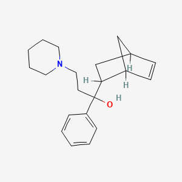
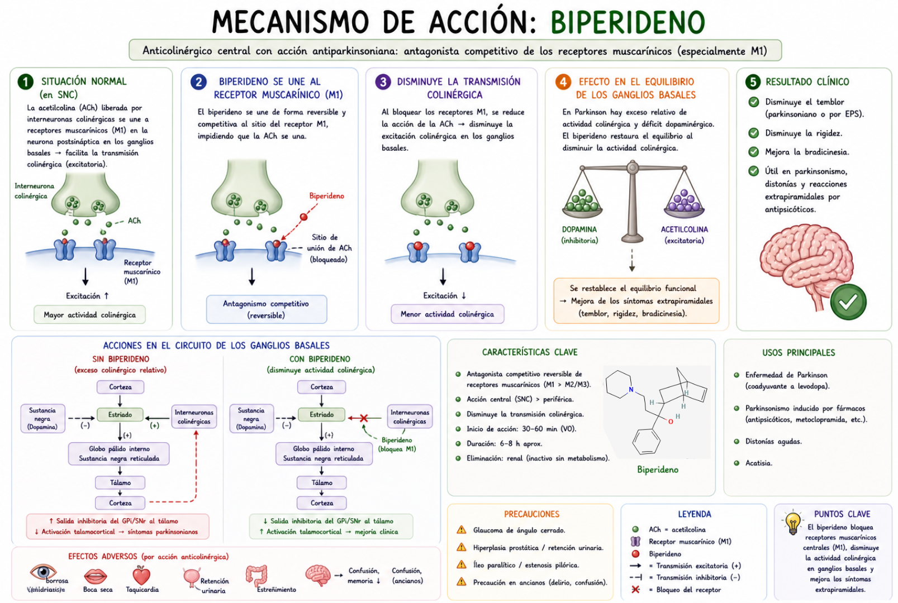

El Biperideno atraviesa la barrera hematoencefálica y se distribuye en el sistema nervioso central, especialmente en los ganglios basales, donde existe un equilibrio funcional entre la actividad dopaminérgica y colinérgica.
Una vez en el tejido cerebral, el biperideno actúa como antagonista competitivo de los receptores muscarínicos de acetilcolina (principalmente M1) en neuronas del cuerpo estriado.
En condiciones normales, la acetilcolina liberada por interneuronas colinérgicas activa estos receptores muscarínicos, favoreciendo la excitabilidad de las neuronas estriatales y modulando la actividad motora. En la enfermedad de Parkinson, la disminución de dopamina genera un predominio relativo de la actividad colinérgica.
El biperideno se une a los receptores muscarínicos e impide la acción de la acetilcolina, reduciendo la activación de estos receptores y disminuyendo la señal colinérgica excesiva.
Como consecuencia, se restaura parcialmente el equilibrio entre dopamina y acetilcolina en los ganglios basales, disminuyendo la hiperactividad colinérgica que contribuye a síntomas como el temblor y la rigidez.
A nivel celular, el bloqueo muscarínico reduce la activación de vías intracelulares dependientes de proteínas G (principalmente Gq), disminuyendo la excitabilidad neuronal.
Como resultado final, el biperideno actúa como antagonista muscarínico central (M1), inhibe la acción de la acetilcolina en el estriado, reduce la actividad colinérgica y mejora el desequilibrio dopamina-acetilcolina, contribuyendo al control de los síntomas motores del Parkinson.
El Biperideno es un antagonista de los receptores muscarínicos (principalmente M1) en el sistema nervioso central. Actúa bloqueando la acción de la acetilcolina en los ganglios basales, una región donde normalmente existe un equilibrio entre dopamina y acetilcolina. En enfermedades como el Parkinson, hay déficit de dopamina, lo que provoca un predominio de la actividad colinérgica.
Al inhibir los receptores muscarínicos, el biperideno reduce esa actividad colinérgica excesiva y ayuda a restablecer el equilibrio con la dopamina. En pocas palabras, bloquea la acción de la acetilcolina, disminuye la excitabilidad neuronal en el estriado y mejora síntomas como temblor y rigidez.
Audio explicativo
Material visual

